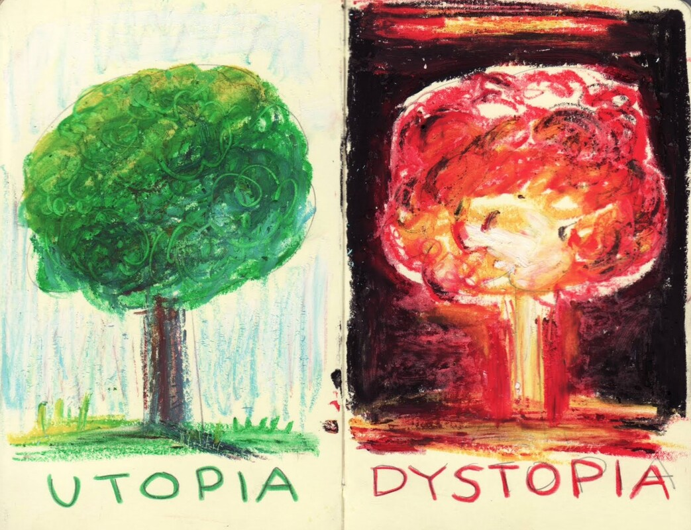

Science Fiction Looks At The State of Today From The Perspective of a Conceived Tomorrow.
Science fiction stories evolve with us. From its home on the edge of of understanding, sci-fi has the unique position to seek to demystify a sort of a here-be-monsters expanse of the unknown where creatives can anchor themselves in reality and dive into a sea of possibility. The best Sci-Fi stories often pick from the ever-fruiting tree of knowledge and expand upon the newest branches, using real-world evidence and conclusions to strengthen their concepts. For example, Blade Runner is based on the novel "Do Androids Dream of Electric Sheep?" By Phillip K Dick in 1968. The story tells of a bounty hunter who is less human than the androids he hunts to "retire" (kill). This concept was born from Dick's position that, "In a very real sense our environment is becoming alive, or at least quasi-alive, and in ways specifically and fundamentally analogous to ourselves." Basically saying that in creating replications of humanity, or looking to automate our society, we lose pieces of what made us human in the first place.
A Mixture of Fears and Hopes
Science fiction often displays a combination of utopian and dystopian ideals, reflecting most of our own thoughts about the future. Everyone hopes what comes ahead will be free from strife, but reality rarely follows our hopes. With this in mind, we can look at Alien, the universe of Alien has conquered space travel using cryostasis to stop people from aging or requiring resources on trips across space that can take decades or even centuries. Medical technology is far beyond our own, they have the ability to create androids, by most metrics, they should be much happier and less burdened than we are. However, the reality is much less sterling, people are crushed under the uncaring machinations of large companies. People live in tiny apartments, devoid of natural light, more akin to jail cells than homes. As much as science has moved beyond our reality, the actual lives of those that live in the universe are not much better than what we have now.
Common Themes in Sci-Fi Stories
- The Balance Between Threat and Dangers Posed by AI
- The Untamable Nature of Life
- The Unknown, Or How What We Don't Know May Hurt Us
These themes are explored further in the "Themes and Examples" portion of the site!